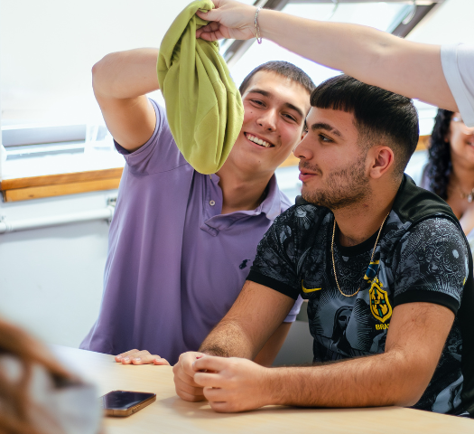
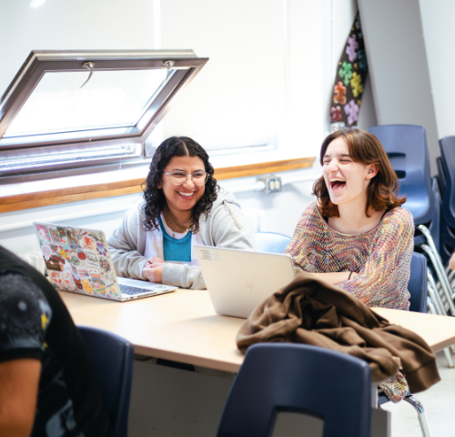
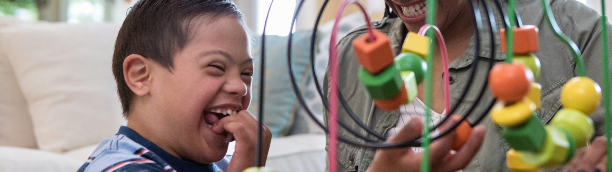
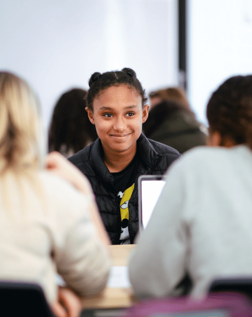
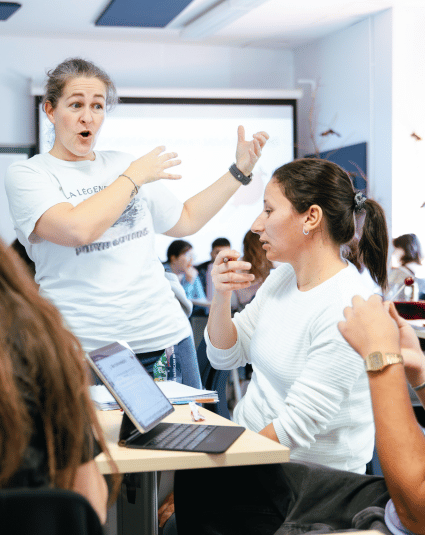
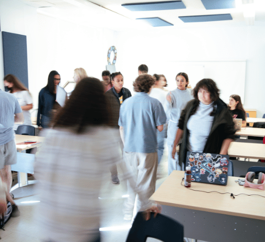
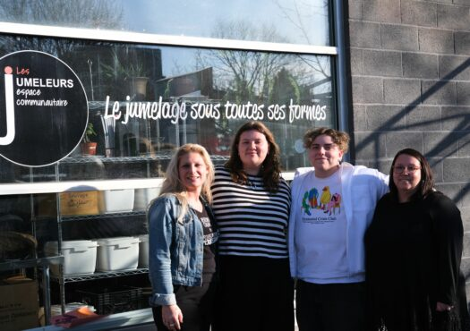
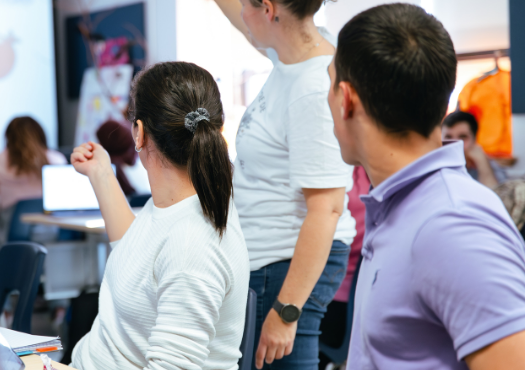

Ce programme forme des éducatrices spécialisées et des éducateurs spécialisés qui interviennent auprès des personnes de tous âges qui ont, ou qui pourraient avoir, des difficultés d’adaptation liées à des problèmes sociaux, affectifs, intellectuels, physiques, comportementaux ou de santé mentale, afin de les aider à améliorer leur qualité de vie et à s’intégrer dans la société.
Indice de contingentement
Préalables
Aucun préalable requis


Le programme Techniques d’éducation spécialisée en trois mots
Collaboration
En éducation spécialisée, on est des «bibittes» sociales qui aiment communiquer et s’entraider! En classe, tu feras une foule d’analyses de cas, de projets d’équipe et de simulations d’intervention et d’animation. En stage, tu travailleras souvent en équipe multidisciplinaire. De plus, tu collaboreras bien sûr avec la clientèle, mais aussi avec sa famille, des collègues et des partenaires afin de cibler des objectifs communs pour favoriser le développement de la clientèle ainsi que sa participation sociale.
Diversité
Quand on étudie en éducation spécialisée, on affectionne la diversité. Avec ouverture d’esprit et empathie, on accueille des personnes jeunes, adultes et aînées qui ont des vécus, forces, difficultés, champs d’intérêt et besoins différents. Elles sont toutes uniques, et chaque relation que l’on développe est privilégiée. Les milieux de travail sont variés (scolaires, institutionnels ou communautaires) et les lieux d’intervention le sont tout autant : classe, gymnase, bureau, parc, résidence, transport, milieu de travail, etc. En tout, tu y passeras plus de la moitié de tes heures de formation!
Adaptation
Les journées ne sont jamais les mêmes en éducation spécialisée, et c’est ce qu’on adore! On crée, anime et adapte toutes sortes d’activités, autant individuelles que collectives. Pour ce faire, on expérimente, au sein du programme, une grande quantité d’approches, de techniques et d’outils, qu’on adapte selon les besoins. On use constamment de discernement et on réfléchit aux pratiques de la profession, afin de déterminer les façons de s’améliorer. Des défis d’intervention, on en mange!

Le programme

Les thèmes du programme
Les compétences développées
- Observer et analyser les comportements ainsi que les enjeux sociaux
- Communiquer avec la clientèle, la famille et l’équipe de travail
- Établir une relation d’aide
- Élaborer un plan d’intervention
- Animer des activités cliniques
- Effectuer des interventions de prévention, d’adaptation et de réadaptation auprès de différentes clientèles
- Intervenir en situation de crise
- Et bien plus!
Pour ce faire, le programme s’appuie sur une pédagogie active en lien direct avec le marché du travail: observations, simulations, ateliers, études de cas, participation à des communautés de pratique, mentorat par des personnes professionnelles du milieu et quatre stages, dont deux auprès des clientèles privilégiées.
À Saint-Laurent, la formation est très concrète :
- 30 % des heures sont théoriques;
- 70 % des heures sont pratiques (25 % dans les cours et 45% en stages).
Les clientèles au cœur du programme
Les étudiantes et les étudiants apprendront à mettre sur pied des activités cliniques et à intervenir (tant au niveau préventif qu’au niveau de l’adaptation ou de la réadaptation) auprès de différentes clientèles, qu’elles soient jeunes, adultes ou aînées, afin de favoriser leur participation sociale.
De plus, à Saint-Laurent, l’étudiant ou l’étudiante se spécialisera en intervention auprès de ces deux clientèles :
- Personnes autistes (au moins un stage auprès d’elles);
- Jeunes en difficulté ou à risque (au moins un stage auprès d’eux)
L’étudiant ou l’étudiante apprendra aussi à intervenir auprès de ces clientèles et pourra effectuer des stages auprès d’elles :
- Personnes vivant avec une déficience intellectuelle;
- Personnes vivant avec un trouble de santé mentale;
- Personnes ayant des difficultés langagières et des troubles de la communication;
- Personnes ayant des difficultés d’apprentissage;
- Personnes aînées en perte d’autonomie;
- Personnes vivant avec une déficience physique;
- Personnes exclues socialement;
- Personnes victimes de violence;
- Personnes vivant avec des dépendances.

Quatre stages offerts
Au cégep de Saint-Laurent, plus de 900 heures de la formation en éducation spécialisée s’effectuent en stages :
1. Stage d’exploration (1re session)
Clientèle au choix
2. Stage d’intervention auprès de personnes autistes (4e session)
Clientèle autiste (âge au choix)
3. Stage d’intervention auprès de jeunes (5e session, automne et hiver)
Clientèle jeunesse au choix
4. Stage d’intégration en éducation spécialisée (6e session, automne ou hiver)
Clientèle au choix
Dès votre admission, vous devrez remplir un formulaire de demande de vérification et de divulgation d’empêchements qui sera analysé gratuitement par le SPVM. Par respect de la loi, une absence d’empêchement vous permettra de pouvoir visiter des milieux qui œuvrent auprès de clientèles vulnérables, y faire des projets et y réaliser des stages.

Une pédagogie active
Le programme a fait le choix d’opter pour une pédagogie active en offrant des activités pédagogiques nombreuses (résolution de problèmes, jeux de rôles, projets, etc.) et en variant les lieux d’enseignement (au cégep et en milieu de travail) afin de placer l’étudiant ou l’étudiante au cœur de ses apprentissages. Pour ce faire, le département met à sa disposition une matériathèque remplie d’outils pouvant être utilisés tant en classe, que lors des projets et en stages. L’étudiant ou l’étudiante apporte son ordinateur portable afin de réaliser les activités et de développer de nombreuses compétences numériques utiles à sa profession.
Perspectives
La demande pour les éducatrices spécialisées et les éducateurs spécialisés est forte dans tous les milieux :
- Écoles primaires, secondaires, centres de formation générale aux adultes et cégeps;
- Centres jeunesse;
- Centres de jour: réadaptation, détention, désintoxication, etc.;
- CHSLD et CLSC;
- Organismes communautaires: refuges, maisons des jeunes, centres de crise, etc.;
- Milieu hospitalier;
- Centres de la petite enfance et services de garde en milieu scolaire;
- Et bien plus!
Dans le secteur public en 2022, le salaire des éducatrices spécialisées et des éducateurs spécialisés varie entre 25$ l’heure et 36$ l’heure.
Taux de placement
L'équipe enseignante

Raphaël Milot

Maude Laniel-Ducharme

Caroline Gourgues

Fannie Dionne

Caroline Perron

Johanne Magloire

Roula Baradhy

Léonie Provost

Valérie Leclerc
Nouvelles récentes

Deux étudiantes font la différence pour la nouvelle maison A-typique
7 avril 2025

Journée mondiale de sensibilisation à l’autisme : 5 mythes à déconstruire
2 avril 2025

Lancement du Foyer pour le programme Techniques d’éducation spécialisée
14 janvier 2025
Nous joindre
Information sur le contenu du programme
Information sur les conditions d’admission
Département
Éducation spécialisée